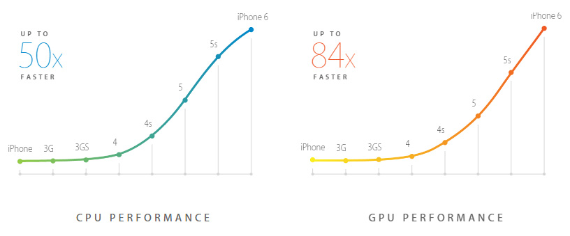
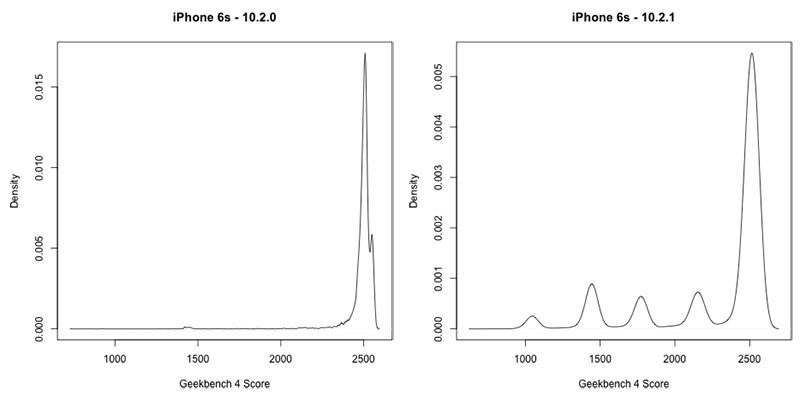

What's Going on with Apple's Batteries?
There’ve been various articles going around about Apple’s batteries in iPhones, or, specifically, Apple’s throttling of phones’ hardware with older batteries. This post seeks to be primarily informational, but if you’re the owner of such a device that might be throttled, I’ll put in some useful information for you at the end of the post. But mostly, I’m going to be looking at the facts of the issue, since the internet in general and news in particular tends more towards sensationalism than complete information.
The main place I’m getting information from is MacRumors. While that sounds like a biased source, in my experience they do their best to provide fair, nuanced, and informational coverage, rather than the fanboyism associated with many Apple-focused news sites.
Accusations of Throttling #
In truth, this story has roots going further back than just this story, and the two can get confused because they brooch similar topics, but are actually separate issues. What I’m talking about in particular is that Apple has been accused of intentionally slowing down older devices with new iOS updates.
It should come as a surprise to no one that Apple primarily develops iOS with their newest devices in mind. This is generally a good thing – having the second camera on the 7 Plus, or the FaceID sensor on the X would be completely pointless without making software to drive it. Part of the hardware improvements made over time are CPU changes, which increase the overall “power” of the phone, as well as its energy efficiency. iPhone CPU improvements have been very dramatic, growing dramatically year-by-year.

Source: Apple (though these figures are relatively representative of real performance gains)
Energy efficiency has grown similarly. With much more computational power available, for a much lower battery hit, it’s natural for developers to use more power for both low-level tasks and to engage in more intensive tasks at the high end. What this means is that basic things, like the home screen, use more energy with every iteration of the software, just because it’s doing more stuff. This means an older phone will struggle more with each iteration of iOS. This is both by-design on Apple’s part, to upsell the newer model, as well as a natural consequence of Apple’s business model. The alternative is more like the Android market, where many phones don’t support upgrading to the latest versions of the operating system. This is a difference in how each market works, and each has benefits (keeping up-to-date with the latest features vs. more stable performance over time).
Evidence gathered has suggested that Apple is not intentionally slowing down older phones, but that the natural progression of the software itself has caused slowdowns, as I was describing. This is a separate issue from the battery-based controversy now happening.
The Battery Controversy #
So now on to the new controversy, that unlike the previously-mentioned one, has strong evidence supporting it, as well as Apple actually confirming their activity. Much of the defense of Apple here is supplied by Apple themselves, explaining why they’re doing what they are, but because it’s more or less impossible to confirm or deny their statements (since they have data that the public simply doesn’t). What we do know for certain is that Apple is intentionally slowing down some older phones using iOS updates.
It was uncovered that, as of iOS 10.2.1, interesting patterns were occurring in the benchmark (a measurement of a computer or phone’s computing power). Basically, there were spikes in the frequency of phones performing in specific ranges, rather than along a more natural curve.

Source: Graphs by GeekBench, compilation by MacRumors
The left graph is of performance of a number iPhone 6s devices prior to iOS 10.2.1, while the one on the right is after. The horizontal axis is performance scores, while the vertical access is the number of phones getting that score. What we see in the second graph is that there are unnatural groupings along certain points – points that Apple is throttling some phones to.
Apple has admitted to the throttling, so this isn’t just speculation, this is fact backed up by experimentation.
But what is notable, is that Apple is not throttling all devices equally, which is what I believe they would do if they were just trying to upsell phones with this maneuver. This backs up their story.
Apple’s Story #
Apple claims that the throttling was introduced as a strategy of power management in older phones. Put simply, as the battery degrades over time (as Lithium-Ion batteries do), this causes some issues in the electronics. Batteries can run out faster than they “should”, because they can no longer hold as much charge. More seriously, degradation of the battery can cause more serious issues. For example, the battery can fail to provide enough power to run a CPU at full blast, causing brownouts when performing intensive tasks. The battery can swell and put pressure on other components, causing them to malfunction. And of course, the readings can become faulty.
Some of you may be rolling your eyes at this claim, but it is true. I say that using my own personal experience. I own a laptop with such a degraded battery, and it can suddenly power off at 40%-50% charge when performing intensive tasks for exactly this reason. Believe me, it sucks to be in the middle of compiling code and have your laptop cut out.
Personally, I suspect that Apple has had some poor quality management of their sourced batteries for a while, based on the variety of incidents surrounding Apple’s batteries lately (I am not the only person with this problem with this model of laptop).
The Counterattack #
Apple is being sued over this. Frankly, I hope that they receive a favorable result, because I feel that Apple’s behavior here is unacceptable, for reasons I’ll explain shortly. The argument of this lawsuit is that Apple neither gave notice, nor any choice, to any users whose phones were throttled. This was done silently, with no meaningful consent, to people who own their products. I don’t know enough about law to know whether this has any merit anymore, but while I don’t necessarily feel that the throttling was wrong exactly, I find Apple’s approach to it lacking and concerning.
Apple’s Response #
A chemically aged battery also becomes less capable of delivering peak energy loads, especially in a low state of charge, which may result in a device unexpectedly shutting itself down in some situations. To help customers learn more about iPhone’s rechargeable battery and the factors affecting its performance, we’ve posted a new support article, iPhone Battery and Performance. It should go without saying that we think sudden, unexpected shutdowns are unacceptable. We don’t want any of our users to lose a call, miss taking a picture or have any other part of their iPhone experience interrupted if we can avoid it.
Source: Apple
Apple has responded to this in a few ways. First, they owned up to, and justified, the things they did. Secrecy and denial was the wrong approach here, and I’m glad Apple was (in my opinion) honest in that regard. Second, they’ve committed to making changes in iOS to be more transparent in regard to this particular issue. Namely, they plan to give more insight into the present health of an iPhone’s battery at any given point, and make that information available on demand. They should have done this a long time ago. MacOS has features to tell you the health of your battery, and third-party apps that do the same. iOS should too. Finally, they’re reducing the price of a battery replacement from $79 to $29, so if you’re affected by this, I recommend taking advantage (if you’re not planning on leaving the Apple ecosystem in response to this).
My Insight #
As someone who has experienced the battery issues (unexpected shutdowns) that Apple alluded to (as well as much worse), let me just say that, despite what you may think, throttling the CPU when on battery power is vastly preferable.
However, what they did was unacceptable. Why? Because there had to be public outrage before they were the least bit transparent about it. Damn it Apple, your customers are adults. Throttling the phones themselves is one thing, but without doing anything to inform your customers? Seriously? That’s one of the most contemptuous moves towards your customers you’ve ever made.
So, you like what Apple did, but not how they did it? How should they have done it then?
Source: You, maybe
Yes, exactly. Apple could have easily done this in a palatable way, using any (or all) of my suggestions here.
- Before throttling a phone, display an alert to a user. The alert could say something like: “Your battery has degraded, and the performance of the device will be reduced. This is to prevent unexpected shutdowns, substantially decreased battery life, and other issues. It’s recommended to get a battery replacement. See [linked article] for more details.”
- Alert users when their battery has degraded, and tell them how bad it is.
- Make the health of the battery easily accessible (to their credit, they are doing this, but it’s too late in my opinion)
- Tell your users how much their phone is being throttled.
- Detect a degraded battery and display an alert with information on how to get a battery repair.
There. There’s 5 ideas on how to have not turned this into a complete and utter PR disaster.
So yes. I think that the throttling is a good thing, but the way that Apple did it is utterly distasteful, shows contempt for their users, and is consumer-unfriendly.
I am Affected by the Throttling, or am Concerned that I May be Affected #
Alright, the promised “what to do” section. While I’m staying in the Apple ecosystem for now, I don’t blame anyone who jumps ship at this point. This is potentially an indicator of bad things to come, and honestly, you should ask yourself if you want to stay invested in a company that did something like this. You may choose, like I did, to stick around, but it is at the very least something you should ask yourself.
Wait until the January iOS Update #
In January, Apple will release an update to iOS that will allow you to see more detailed information about your battery’s health. That information may be useful to making a decision about what to do, and if you’re uncertain about whether you’re affected, it should hopefully provide some insight.
Take a Look at Apple’s Battery Article #
Apple explains the circumstances surrounding batteries better than I can, so take a look at their new support article to educate yourself a bit further. Just keep in mind that you are reading something from the company itself that may have inherent bias or points to make. If you played with DC circuits in high school or college (and still remember it) you will probably understand most or all of what they talk about. If not, you should still be able to follow it and understand what they’re getting at.
Consider Upgrading #
This may be weird following the previous point, but it may be worth it. The insight that phones with older batteries are being throttled may make it a good time to switch to a new phone. If you want to stay in the Apple camp, the iPhone 8 and 8 Plus are well-liked (though I still feel that the X is too new/untested for a reliable main phone). If you want to switch to Android, the Google Pixel 2 is by all accounts a loved phone (if you can get over the fact that Goo-We-Make-Our-Money-By-Essentially-Selling-Your-Data-To-Advertisers-gle makes it).
Plan For a Battery Upgrade #
Starting in late January, Apple will begin providing battery servicing at a much lower price of $29, as opposed to the current $79. This is a pretty good deal. If, once the iOS update with the new battery health features drops, your device could use a repair (threshold is below 80% health for Macs, I’d expect similar), I’d look into getting it serviced.
Talk to Apple Support #
There’s nothing like a real human to answer questions and concerns, and to give you a hand. Personally, I like live chat, because it can be done passively (while watching TV or whatever), it gives support time to more naturally look up information, and doesn’t have hold music. I’d hold off on this, just because there’s not that much they can do until the iOS changes are rolled out and the price of battery servicing is reduced. As always with tech support, you’ll get the best service by remaining calm, cooperating fully, and answering questions clearly and with detail. Keep in mind that they had no choice over Apple’s approach here. Here’s how to get there:
- Visit the support website.
- Select “Batteries, Power, and Charging”.
- Select “Battery Questions or Troubleshooting”.
- Select “Chat”. You’ll be connected to someone within a couple minutes (in my experience).